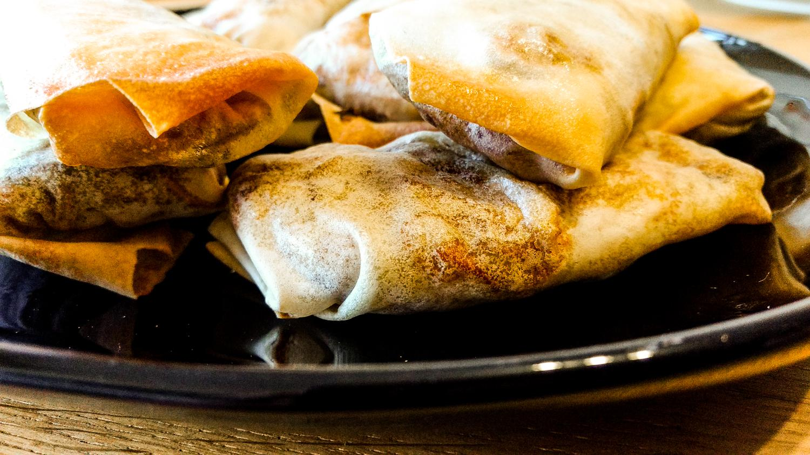

Rezepte

Frühlingsrollen
Einkaufszeddele
- gefrorener Frühlingsrollenteig (20x20) ca 40 Blätter
- 200g gefrorener Tofu
- 300g Glasnudeln
- 250g Zuckerschoten
- 2 Paprika
- 4 Karotten
- 1-2 Zwiebeln
- 1 Marinade (s. Marinaden)
6-8 Portionen
Vorbereitung
- Tofu 24 Stunden vorher aus dem Gefrierschrank nehmen
- Tofu kurz unter heißes Wasser halten und dann in ein Geschirrtuch wickeln
- etwas schweres oben drauf stellen und den Tofu so über Nacht (ca 12-16 Stunden) auftauen lassen
- Teigblätter 1 Tag vorher vom Gefrierschrank in den Kühlschrank zum Auftauen
Füllung
- Tofu in dünne Scheiben schneiden und für ca 30min in der Marinade lassen (je nach Marinade)
- Karotten, Paprika in feine Streifen schneiden, Zuckerschoten in Stücke schneiden, Zwiebeln klein schneiden
- Glasnudeln kochen
- 3-4 EL Sesamöl in einer Pfanne eritzen
- nach und nach das Gemüße anbraten
- alles in eine große Schüssel geben und vermengen
- Mit Salz, Sojasauce und Sesamöl abschmecken
Rollen
- Falls der Frühlingsrollenteig noch nicht aufgetaut ist für ca 3min bei 130 Umluft in den Backofen
- Einen Frühlingsrollenteig auf einen flachen Teller legen
- ca. 2 EL Gemüse in die Mitte geben
- etwas Tofu darauf legen
- den Teig inklusive der ganzen Füllung bis zur hälfte einrollen
- die Seiten des Teigs einklappen
- bis zur Spitze weiterrollen
- evtl die Spitze mit einer Wasser-Mehl-Mischung fixieren
- Die Rollen im Ölbad anbraten, bis sie goldbraun sind
Frittieren
- 8 min bei 180 in der Heißluftfriteuse